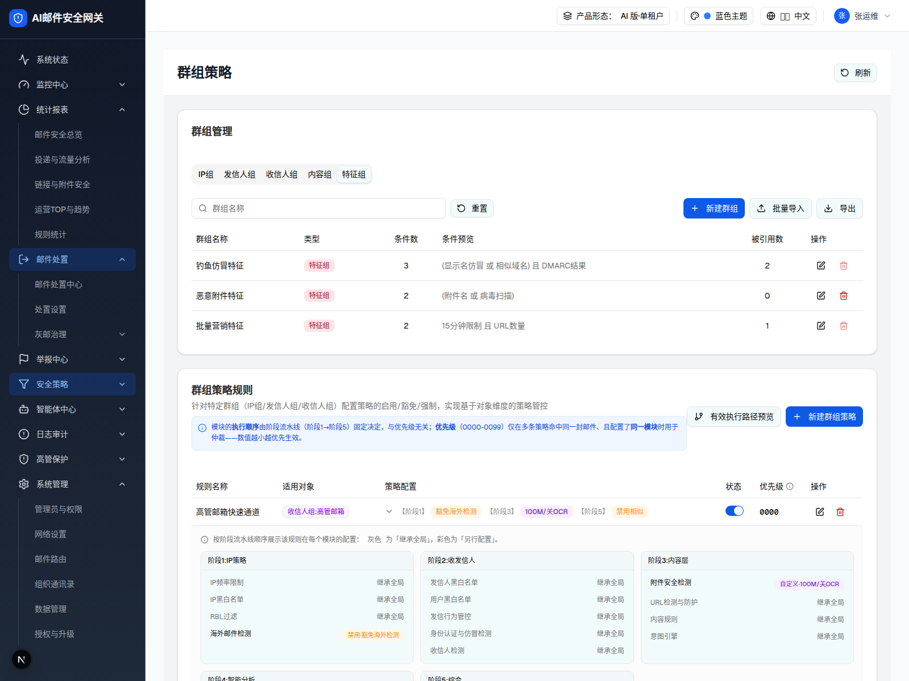

| 所属组件 | 2.2 群组策略规则表格 GroupPolicyTable |
| 主文件 | filter-rules-group-policy/index.html |
| 触发路径 | 规则行「策略配置」列 ▸ 按钮 → 展开 colSpan 行 |
| demo 源 | group-policy-page.tsx toggleRuleExpand + RuleConfigDetail L929-L969 |
触发路径：规则「策略配置」单元格的 ▸ 图标 → toggleRuleExpand(rule.id) → 追加一整行 RuleConfigDetail
行内「状态」开关可切换（联动行 opacity）；展开/收起 chevron 可点（本层展示「高管邮箱快速通道」展开态）
针对特定群组（IP组/发信人组/收信人组）配置策略的启用/豁免/强制，实现基于对象维度的策略管控
模块的执行顺序由阶段流水线（阶段1→阶段5）固定决定，与优先级无关；优先级（0000-0099）仅在多条策略命中同一封邮件、且配置了同一模块时用于仲裁——数值越小越优先生效。
| 规则名称 | 适用对象 | 策略配置 | 状态 | 优先级 | 操作 |
|---|---|---|---|---|---|
| 高管邮箱快速通道 | 收信人组:高管邮箱 | 【阶段1】豁免海外检测 【阶段3】100M/关OCR 【阶段5】禁用相似 | 0000 | ||
按阶段流水线顺序展示该规则在每个模块的配置：灰色为「继承全局」，彩色为「另行配置」。 阶段1:IP策略 IP频率限制 继承全局 IP黑白名单 继承全局 RBL过滤 继承全局 海外邮件检测 禁用·豁免海外检测 阶段2:收发信人 发信人黑白名单 继承全局 用户黑白名单 继承全局 发信行为管控 继承全局 身份认证与仿冒检测 继承全局 收信人检测 继承全局 阶段3:内容层 附件安全检测 自定义·100M/关OCR URL检测与防护 继承全局 内容规则 继承全局 意图引擎 继承全局 阶段4:智能分析 钓鱼邮件检测智能体 继承全局 仿冒邮件检测智能体 继承全局 威胁回溯智能体 继承全局 阶段5:综合 相似检测 禁用·禁用相似 高级规则 继承全局 邮件标记 继承全局 | |||||
| 可信IP通道 | IP组:可信IP | 【阶段1】豁免RBL 【阶段2】豁免认证 | 0001 | ||
| 研发部门外发 | 发信人组:研发部门 | 【阶段3】50M/开OCR 【阶段5】禁用相似 | 0002 | ||
| IP群组1-附件检测禁用 | IP组:IP群组1 | 【阶段3】禁用附件检测 | 0001 | ||
| IP群组1-RBL隔离 | IP组:IP群组1 | 【阶段1】命中隔离 | 0002 | ||

| 元素 | 说明 |
|---|---|
| 入口 | 规则「策略配置」列的 ▸/▾ 按钮（aria-label 查看完整配置/收起完整配置），toggleRuleExpand |
| 展开行 | colSpan=6 的整行，bg-muted/30，渲染 RuleConfigDetail |
| 说明条 | Info 图标 +「按阶段流水线顺序展示…灰色为继承全局，彩色为另行配置」 |
| 阶段卡网格 | md:2 列 / xl:3 列；每卡=阶段名(bg-muted/40) + 各模块行 |
| 模块行 | 左=模块名（配置则 font-medium，否则灰）；右=「继承全局」灰字 或 彩色状态徽标 |
| 状态徽标配色 | 禁用 #FFF7E6/#FA8C16(橙)；自定义 #F9F0FF/#722ED1(紫)；继承/启用 #E6F4FF/#1677FF(蓝)；徽标文案=状态·摘要 |
| 阶段可见性 | 阶段4「智能分析」requiresAI，仅 AI 形态出现（本图 AI 版） |
| 比对项 | demo 实际 DOM | 嵌入 spec 的 HTML | 是否一致 |
|---|---|---|---|
| 根节点 | div[data-slot=card]（策略卡） | 同 | ✅ |
| 展开后节点总数 | 312 | 312 | ✅ |
| 表格行数（含展开行） | 7 | 7（表头+5 规则+1 展开） | ✅ |
| 阶段卡数 | 5（AI 形态含阶段4） | 5 | ✅ |
| 高管邮箱快速通道·阶段1 海外 | 禁用·豁免海外检测（橙徽标） | 同 | ✅ |
| 高管邮箱·阶段3 附件 | 自定义·100M/关OCR（紫徽标） | 同 | ✅ |